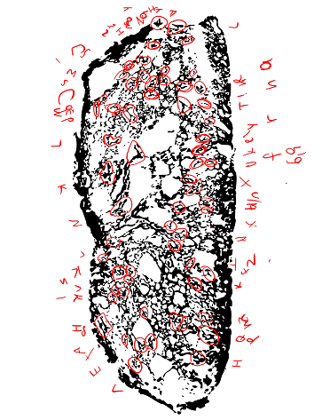
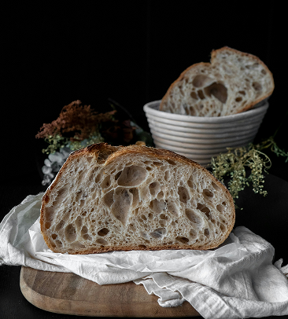
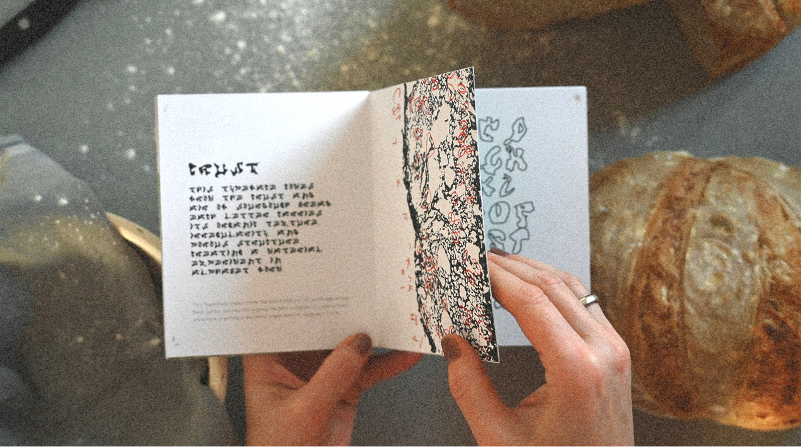
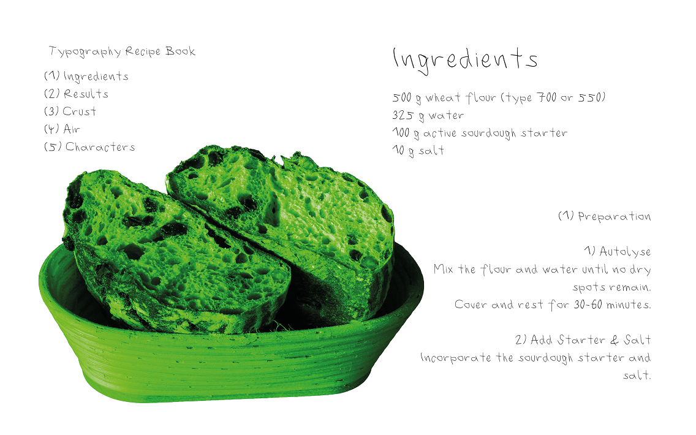
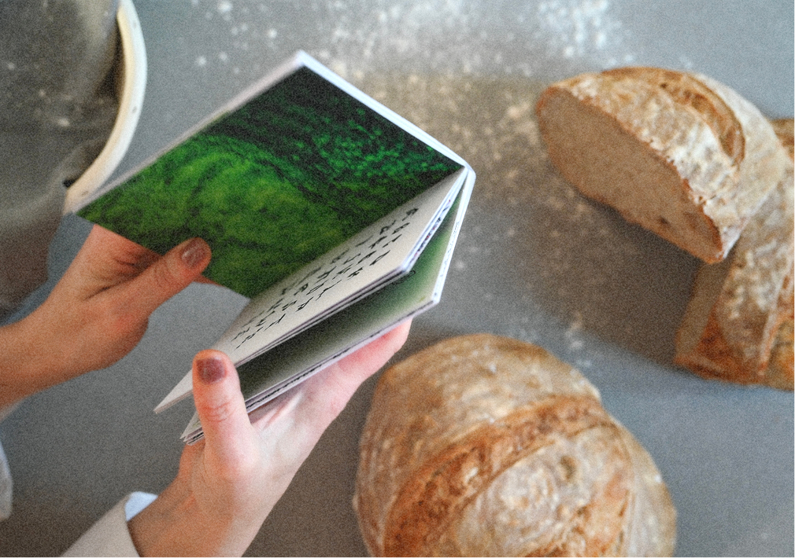
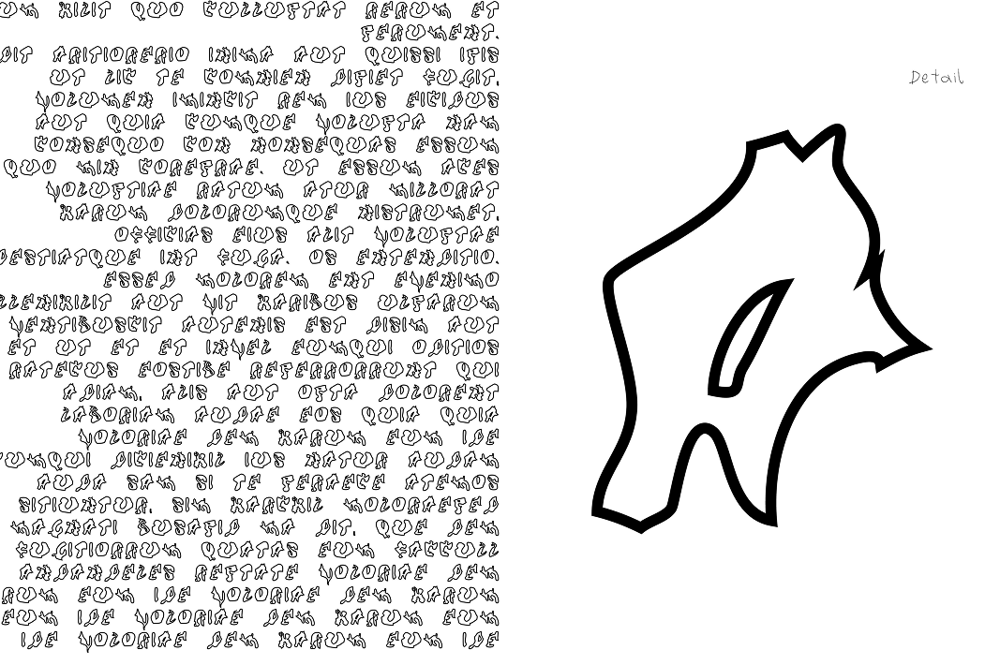
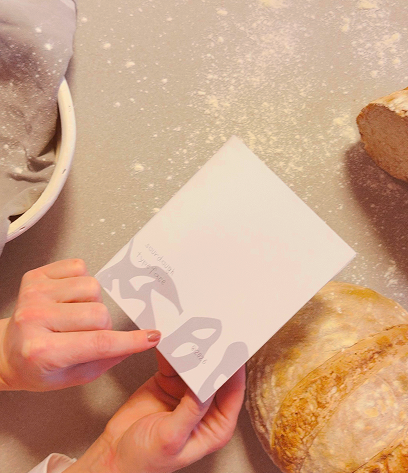
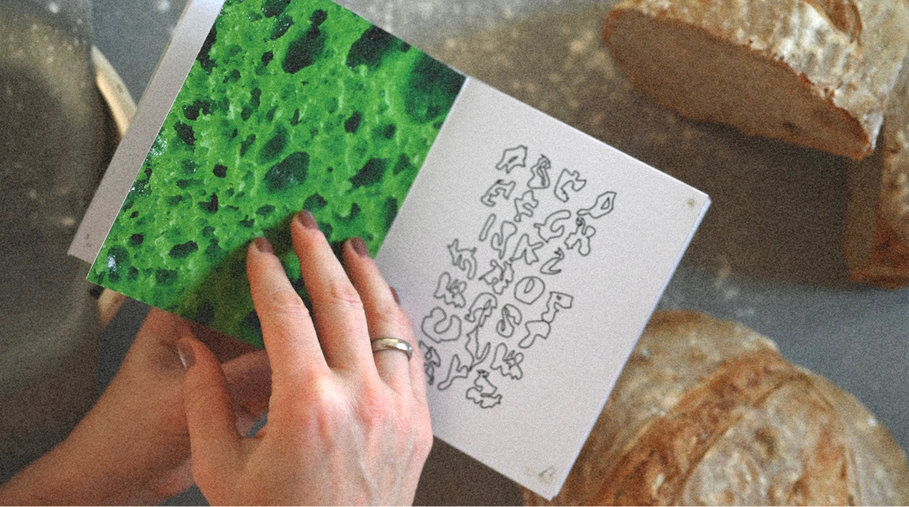
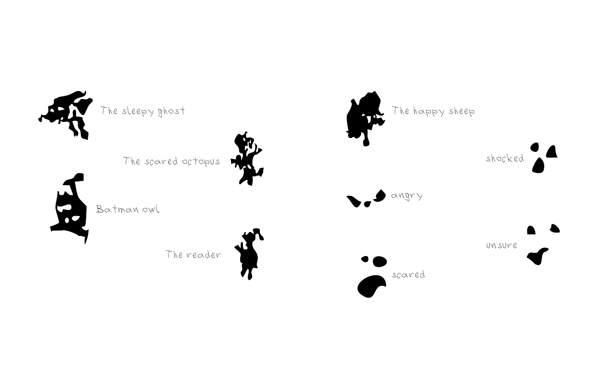
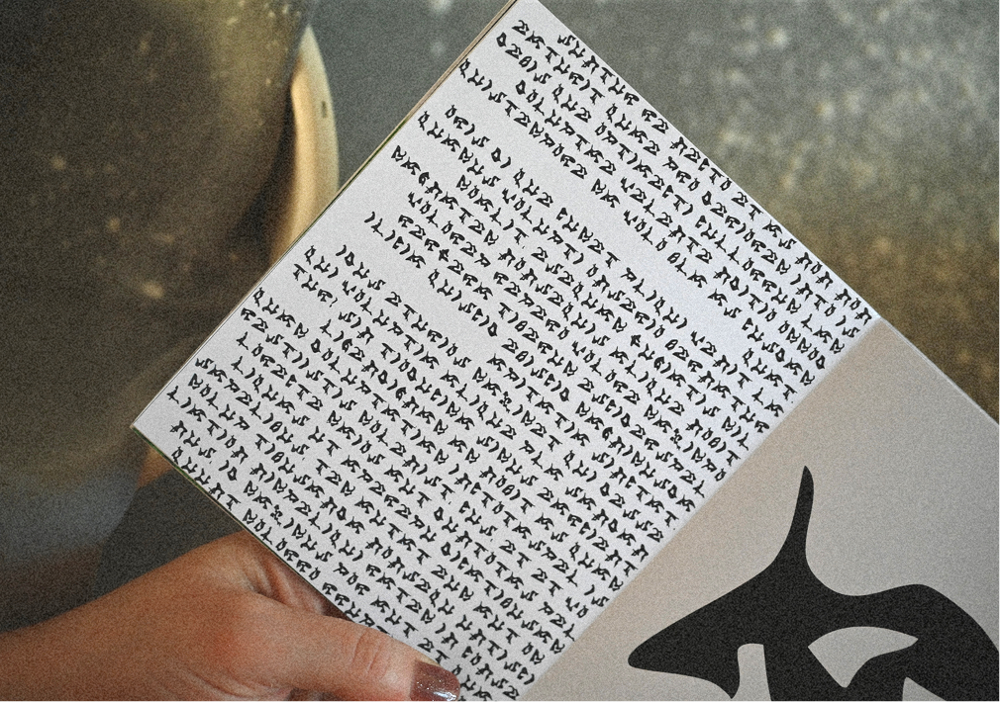

SOURDOUGH
TYPE
DEVELOPMENT OF MY
OWN TYPEFACE
Based on one sauerdough bred i made a typeface out of the
air wholes and dough parts.


This typeface is dislayed in a small recipe booklet, where you can look up the exact way how to make your own sourdough typeface.
/ 01 - 2026


One typeface is named “Crust” because it is created just from the dough and crust parts of the bread.




The other one is named “Air” because it is made out of the air wholes & the white space of the bread print.

Additionally, the typeface includes character forms that evolved from the print itself. They invite individual interpretation and add a subtle, playful layer to the design.


Supervision: Martin Gnadt